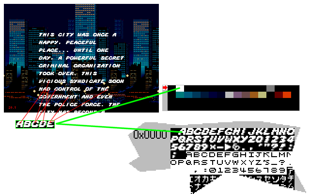

Pic d - Planes are made of tiles !
Basicaly, a plane is a big array (a 512px*512px plane is a 64*64 cases array. Aka PlaneData). In each case, you can specify:
1-Priority (HP or LP).
2-Palette (0-3).
3-Flip (V,H,HV).
4-Id of the starting tile (0-2047).
It's a bit like sprites, but here, you can specify 1 independant tiles / case of the plane.
You must define the order of tiles on the plane yourself.
In the fallowing example, the complete font tiles are stored in the VRAM (pattern).
And when the program reload the plane with *text* it just put: A=1,B=2,C=3....
Infact, when the letter A is used 3 times or more in the text, it's a bit like a clone (in the PlaneData, not in the pattern).
This *cloning* technique is used in 99% of the games to save VRAM pattern space. Because, when you want to display a full screen pic, it's 40*28 tiles (1120 tiles) and this is enormous to store in the VRAM (the pattern).
